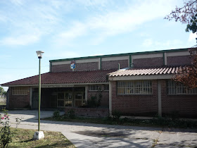

Bienvenidos a la Página Web de Administración de la Institución
La Escuela de Educación Técnica (EET) 3117 "Maestro Daniel Oscar Reyes" está ubicada en el Barrio San Remo de Salta. El 22 de marzo de 2004, la escuela fue nombrada en honor al maestro argentino Daniel Oscar Reyes, un pionero en telecomunicaciones y promotor de llevar tecnologías a las escuelas públicas.

Contacto
Facebook
387 427-1531